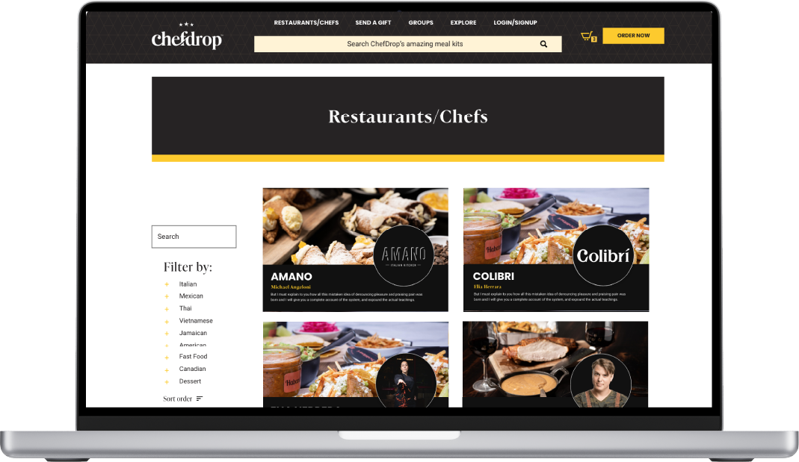

<!DOCTYPE html>
<html lang="en">
<head>
	<!-- Metas -->
	<meta charset="UTF-8">
	<meta name="viewport" content="width=device-width, initial-scale=1.0, maximum-scale=1.0, user-scalable=0">
	<title>Toni Cater - Designs</title>
	<meta name="description" content="Toni Cater - Designs">

	<!-- External CSS -->
	<link rel="stylesheet" href="assets/css/fontawesome-all.min.css">
	<link rel="stylesheet" href="assets/css/themify-icons.css">
	<link rel="stylesheet" href="assets/css/linea_arrows.css">

	<!-- Custom CSS -->
	<link rel="stylesheet" href="assets/css/main.css">
	<link rel="stylesheet" href="assets/css/colors.css">
	<link rel="stylesheet" href="assets/css/responsive.css">

	<!-- Google Fonts -->
	<link href="https://fonts.googleapis.com/css?family=Lato:300,400,700,900" rel="stylesheet">

	<!-- Favicon -->
	<link rel="apple-touch-icon" sizes="180x180" href="assets/favicon/apple-touch-icon.png">
	<link rel="icon" type="image/png" sizes="32x32" href="assets/favicon/favicon-32x32.png">
	<link rel="icon" type="image/png" sizes="16x16" href="assets/favicon/favicon-16x16.png">
	<link rel="manifest" href="assets/favicon/site.webmanifest">
	<link rel="mask-icon" href="assets/favicon/safari-pinned-tab.svg" color="#5bbad5">
	<meta name="msapplication-TileColor" content="#2b5797">
	<meta name="theme-color" content="#ffffff">
</head>

<body>

	<div class="container">

		<!-- Header -->

		<header class="main-header">

			<!-- <a href="index.html" class="logo">
				
			</a> -->

			<nav>

				<a href="#" class="open-nav"><i></i></a>
				<ul class="navigation" style="color: #000">
					<li><a href="index.html" style="color: #000">home</a></li>
					<li><a href="single-project_05.html" style="color: #000">portfolio</a>
						<ul class="sub-nav">
              <li><a href="single-project_05.html">Chefdrop</a></li>
							<li><a href="single-project_06.html">Ganjika House</a></li>
							<li><a href="single-project_yeti.html">If You Met a Yeti...</a></li>
							<li><a href="single-project_01.html">BITS Annual Report</a></li>
							<li><a href="single-project_02.html">UforChange Annual Report</a></li>
							<li><a href="single-project_03.html">Black Futures</a></li>
							<li><a href="single-project_04.html">Textiles</a></li>
							<li><a href="single-project_Women in view.html">Women In View</a></li>
						</ul>
					</li>
					<li><a href="about.html" style="color: #000">about</a></li>
				</ul> <!-- /.navigation -->

			</nav> <!-- /nav -->

		</header> <!-- /header -->

		<div class="clearfix"></div>

	</div> <!-- /.container -->

	<!-- Main -->

	<main class="single-project project_05">

		<section class="overview">

			<div class="container">

				<header>
					<span class="project-services">UI/UX Design</span>
					<h1 class="project-title">Chefdrop Redesign</h1>
				</header>

				<p>Chefdrop is a meal kit delivery service that offers customers access to a wide selection of premium meal kits prepared by notable restaurants and chefs across Toronto.</p>
				<a href="https://chefdrop.ca/" class="read-more-link">visit website<i class="ti-arrow-right"></i></a>

			</div> <!-- /.container -->

		</section> <!-- /.overview -->

		

		<div class="container">

			<p class="intro">
        Chefdrop was experiencing issues with their checkout and the site flow in the first version of their site. The Checkout process was very convoluted, which resulted in a high drop-off rate. We had to solve their check out cart issue, and develop a better way to showcase different food categories and deals marketing wanted to promote such as gifts, and group orders that increase profit. 			</p> <!-- /.intro -->

			

			<section class="project-details">

				<div class="content">
					<h2>research & planning</h2>
					<p>When my role commenced, I audited the old version of the site with the clients to address and scope out their largest design issues. In a series of meetings, I proposed solutions that were attainable within their four-month time budget.
					</p>
					&nbsp;
					<ul class="chefdrop">
						<li> I created an onboarding feature for the guest checkout process, eliminating their previous single form format and ideated that the checkout process should eliminate other distractions offered by the site such as the full navigation and full footer.</li>
						<li> I added a calendar of available delivery dates in the checkout flow that allowed users to choose their delivery date and be informed of additional add ons and non-compatible dates ahead of their commitment to the checkout phase.</li>
						<li> Instead of a dropdown list for their Chefs and Restaurant options, I decided to create a gallery page that shows all restaurants and chefs on a single page with filtration options. </li>
						<li> To eliminate the confusion about how to order, I designed the home page that addressed the ordering process in its container so users know how their delivery system works ahead of their decision to order.</li>
					</ul>
				</div>

			</section> <!-- /.project-details -->

				</div>

			</section> <!-- /.project-details -->

		</div> <!-- /.container -->

		<div class="color-block">

			<div class="container">
				<p>I worked with the client to revise a lot of the interface graphically such as text, hero banner size, main navigation, sub-navigation and the footer. Please see the casestudy to see the solutions going into the final.</p>
			</div>

		</div> <!-- /.color-block -->

		<div class="container">

			<section class="project-details">

<div class="content">
    <a href="https://tonicater.me/assets/files/upgraded2021-2022portfolio.pdf" class="read-more-link">visit casestudy<i class="ti-arrow-right"></i></a>
</div>


		</div> <!-- /.container -->


		<div class="container">

			<div class="projects-nav">

				<div class="next-project">
					<span>next</span>
					<h2><a href="single-project_06.html">Ganjika House</a></h2>
				</div>

				<div class="clearfix"></div>

			</div> <!-- /.projects-nav -->

		</div> <!-- /.container -->

	</main> <!-- /main -->

	<!-- Footer -->
	<footer class="main-footer">

		<div class="content">

			<div class="social-icons">
				<ul>
					<li><a target="_blank" href="https://www.instagram.com/tonicaterdesigns/"><i class="fab fa-instagram"></i></a></li>
          <li><a target="_blank" href="https://www.behance.net/tonicdesigns"><i class="fab fa-behance"></i></a></li>
					<li><a target="_blank" href="https://www.linkedin.com/in/toni-cater-50817a78/"><i class="fab fa-linkedin-in"></i></a></li>
				</ul>
			</div>

			<div class="copyright-info">
				<p>Copyright &#169; Toni Cater Designs. All rights reserved.</p>
			</div>

		</div>

	</footer>

	<div class="aside-nav-container">

		<a href="#" class="close-nav"><i class="ti-close"></i></a>

		<nav>

			<ul class="aside-nav">
				<li><a href="index.html">home</a></li>
				<li><a href="single-project_01.html">portfolio</a></li>
				<li><a href="about.html">about</a></li>
				<li><a href="contact.html">contact</a></li>
			</ul> <!-- /.aside-nav -->

		</nav>

	</div> <!-- /.aside-nav-container -->

	<div class="body-overlay"></div>

	<!-- Script -->
	<script src="assets/js/main.js"></script>

</body>
</html>
